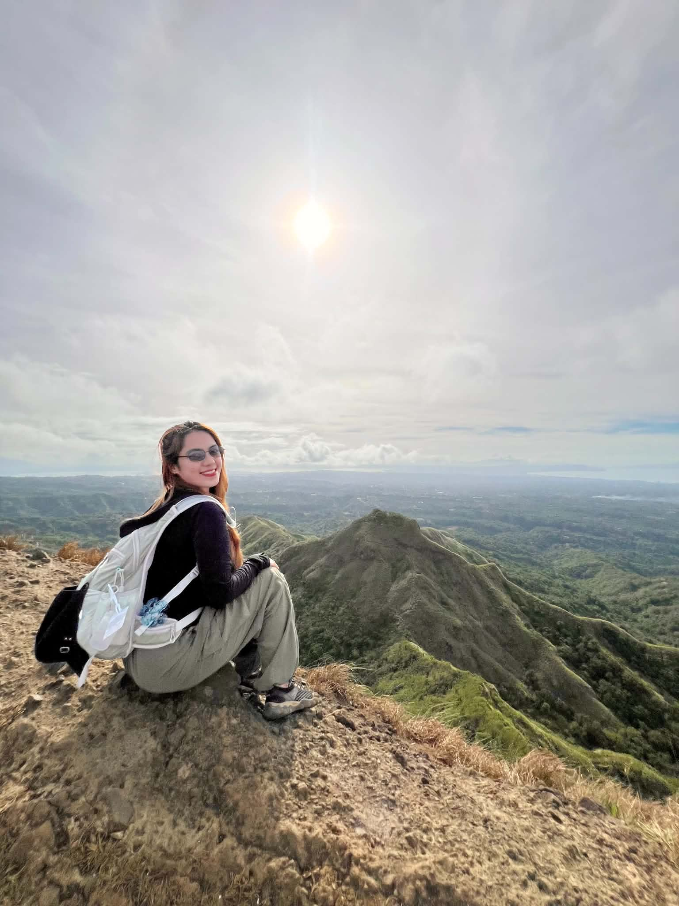
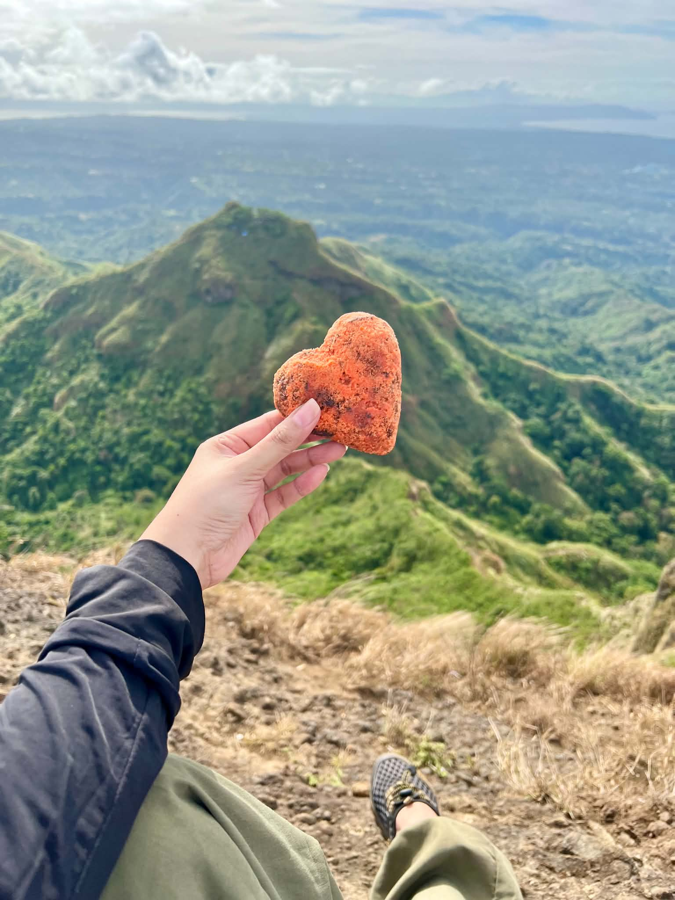
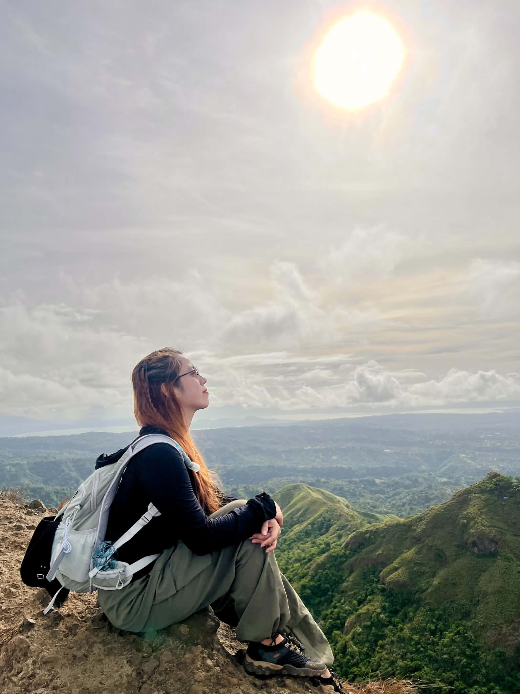
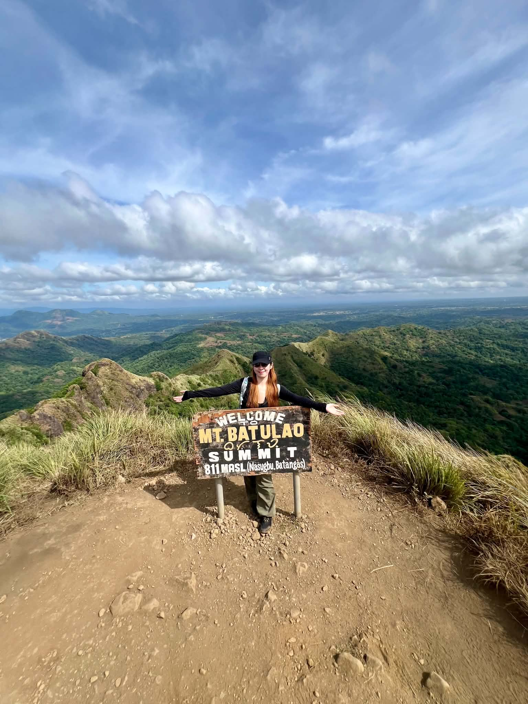
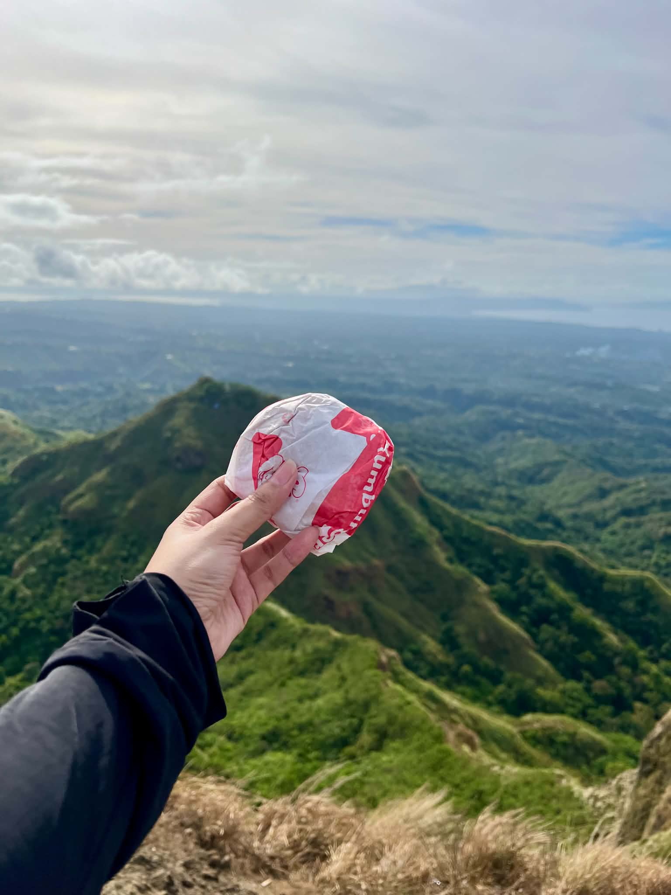
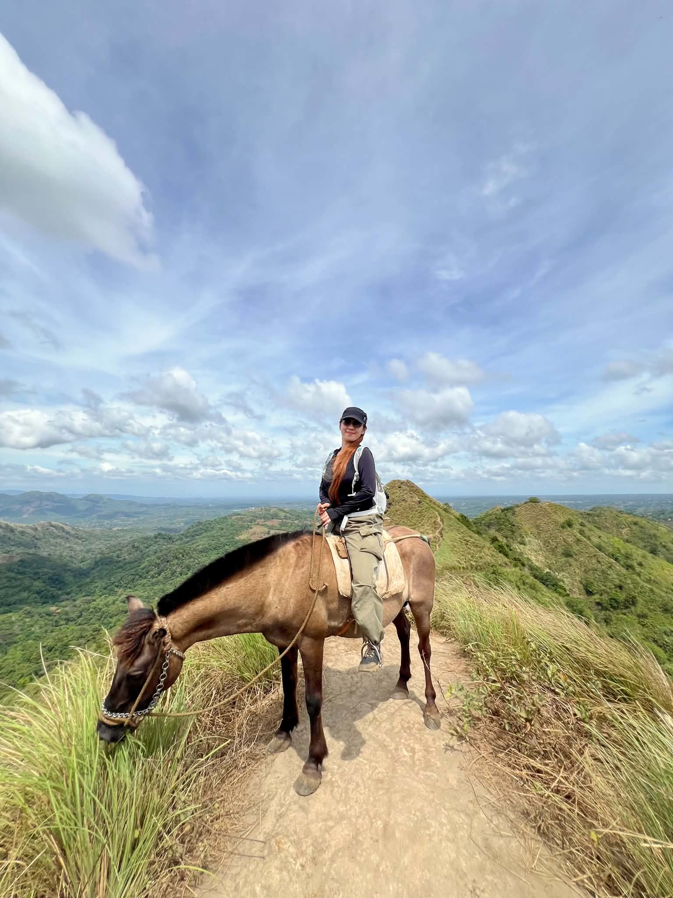

“Batulao felt like walking on the spine of a sleeping giant, baked under the Batangas sun and cooled by the fierce Pacific winds.”




May 10, 2026
Walking the Jagged Spines of Nasugbu
Mt. Batulao's name derives from the spectacular play of light as the sun rises between its dual rocky peaks.

“Batulao felt like walking on the spine of a sleeping giant, baked under the Batangas sun and cooled by the fierce Pacific winds.”


Mt. Batulao rises dramatically from the plains of Nasugbu. The trail immediately greets you with open, rolling grasslands. Walking along its narrow dirt spines is a thrilling exercise in balance, with the grass bowing to the powerful, dry gusts that sweep across the ridges.


Climbing Batulao means getting your hands dirty. The trail features steep, vertical rock faces that require active scrambling. Reaching the narrow stone spires, we couldn't resist playing around. From standard heroic poses to lying flat on top of the rocks like cliffhangers, the rocky ridges became our personal playground.
At 811 meters above sea level, the summit offers an unmatched 360-degree panorama of Batangas, Cavite, and the distant South China Sea. The iconic wooden sign marks the highest point, a sanctuary in the sky where the wind blows with intense force under a canopy of drifting clouds.



While most hikers settle for trail mix or energy gels, we brought a classic Filipino treat to the peak: a Jollibee Yumburger. There is something magical about unwrapping a warm burger at 811 MASL, accompanied by a sweet heart-shaped pastry, while enjoying the cool ridge breeze. It remains the best meal on any trail.
To wrap up the traverse, we embarked on a unique side quest: horseback riding along the ridge descent. The local mountain horses navigate the steep, narrow dirt paths with absolute certainty. Riding high above the green valleys under a vast blue sky was the perfect, calming finale to an adventurous climb.


“Between the warm rocks and the solar wind, we found our footing.”
Interact with our dynamic tools to inspect trail elevations, calculate statistics, and check off required hiking gear.
Slide or hover across the elevation model to analyze slopes and checkpoints.
Check off the essential items we brought for this challenging Mt. Batulao climb.